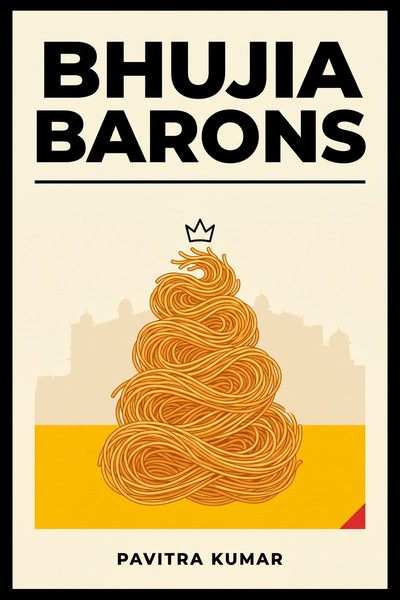

Library › History
Bhujia Barons: The Untold Story of How Haldiram Built a 5000-Crore Empire — Summary & Key Lessons

A teenage boy in 1930s Bikaner tweaks his aunt's bhujia recipe and builds India's snack empire: secrets, splits and all.
📖 OPEN THE FULL INTERACTIVE BREAKDOWN →🌐 Read it in Hindi, Hinglish, Gujarati, Tamil & 22 more languages — free, with audio.
💡 The Big Idea
Pavitra Kumar traces Haldiram's from Ganga Bhishen Agarwal (nicknamed Haldiram), who refined his aunt's bhujia recipe in Bikaner in 1937, through three generations of growth: the secret-recipe moat, the brand battle when the family split into Bikaner, Delhi and Nagpur branches, the shift from one shop to packaged national distribution, and the fight against multinationals (Lay's, Kurkure) using price ladders, regional taste depth and freshness economics. The book is a study of building a durable moat in the most commoditized category imaginable (fried snacks): recipe secrecy, brand trust, distribution depth and family governance, including the costs of keeping a business inside a family.
🧠 The 8 Key Lessons
Lesson 1: A Secret Is the Cheapest Moat Ever Built
The Recipe
Ganga Bhishen's bhujia used moth beans and a finer besan ratio his aunt's version lacked, and the recipe stayed an oral family secret for decades. In a category with zero technology barriers, the secret recipe created differentiation competitors could not copy or reverse-engineer. The lesson: a trade secret (recipe, process, sourcing relationship) is a legitimate moat when it is genuinely hard to reproduce and genuinely maintained.
📖 Example: Competitors in Bikaner sold near-identical bhujia for years; customers could taste the difference, and the family's refusal to write the recipe down meant no document ever leaked. Read the full example →
⚡ Do this: Identify the one element of your product competitors cannot see. Decide deliberately whether to patent it, or protect it as a maintained secret with access discipline.
Lesson 2: Brand Before the Category Does
Bhujia Wala
Customers called the product by the maker's nickname (Haldiram bhujia wala) long before packaging existed, which is the oldest form of branding: personal trust becoming product identity. When the family later fought over the name, the courts recognized what customers already knew: the name WAS the brand. Founders should build for name-recall from day one because the name becomes the asset everyone fights over.
📖 Example: The family split led to multiple entities (Bikaner, Delhi, Nagpur) all trading on variants of one name, and decades of legal wrangling over who owned the goodwill a single man's nickname created. Read the full example →
⚡ Do this: Write down who owns your brand name if your partnership or family ever splits. The cheapest time to sign that document is when everyone still likes each other.
Lesson 3: Distribution Depth Beats Advertising Height
From One Counter to Every Counter
Haldiram's national rise ran on distribution: small pack sizes at low price points, placement at paan shops and railway stations (train travel made namkeen a national habit), and decentralized manufacturing reaching far cities fresh. While multinationals bought television, Haldiram's bought shelf-level availability in places chips brands ignored. Availability is the quiet kingmaker in impulse categories.
📖 Example: Railway platforms and long-distance trains (where a packet of bhujia is part of the journey) built nationwide habit decades before modern trade did, and the supply chain was designed around freshness per region rather than one national factory. Read the full example →
⚡ Do this: Map the five smallest retail points in your category where your competitor is absent. Being the only branded option in tiny locations builds habit no ad budget can buy.
Lesson 4: Family Splits Are Strategy Events, Not Just Emotional Ones
One Recipe, Three Kingdoms
The Haldiram family's partition of territories (Bikaner, Delhi, Nagpur branches) avoided a courtroom war and let each branch grow in its region, but it also fragmented the brand and created decades of name litigation and market confusion. Family businesses need split-scenarios designed before they are needed, not negotiated in grief.
📖 Example: Today's consumers still ask whether Delhi Haldiram's and Nagpur Haldiram's are the same company; the answer (they are not, and the trademark battles outlived the founders) is the price of an undocumented succession. Read the full example →
⚡ Do this: If you run a family or founding-team business, draft the separation scenario now: who keeps the name, who keeps the region, who values the shares. Sign it while it is hypothetical.
Lesson 5: Fight Multinationals with Freshness and Price Ladders
Lay's, Kurkure and the Counterattack
When PepsiCo's Frito-Lay attacked with Lay's and Kurkure, Haldiram's did not fight on advertising: it fought with price ladders (packs at 5 and 10 rupees), regional taste depth (aloo bhujia and dozens of variants) and freshness economics (regional factories shortening shelf-to-shelf time). Global scale is beatable in taste-led categories by local freshness and price-point precision.
📖 Example: The 5-rupee pack kept Haldiram's in every child's hand while chips brands chased premium positioning; regional flavors defended the home market where global flavor research was weakest. Read the full example →
⚡ Do this: Price one SKU at the lowest unit your economics allow and defend it as a marketing cost. The smallest pack is your cheapest advertising and your best moat against entry.
Lesson 6: Modernize the Kitchen Without Losing the Recipe
Factories, Not Hands
Scaling from hand-fried bhujia to national volume required automation that preserved taste: standardized frying parameters, packaging tech (nitrogen flushing), food-safety certification for exports, while the core recipe stayed protected. The pattern: industrialize everything EXCEPT your moat. Documented processes for the replicable, guarded secrecy for the differentiating.
📖 Example: Export markets (with their labelling and hygiene regimes) forced certification systems that improved domestic quality too, showing modernization and moat-keeping are complements when scoped correctly. Read the full example →
⚡ Do this: Split your operation into two lists this week: 'replicable' (document, systematize, automate) and 'differentiating' (restrict access, maintain ritual). Never put an item on both lists.
Lesson 7: Trust Is a Multi-Generational Asset That Compounds Quietly
From Haldiram to Every Indian Pantry
Three generations of consistent taste turned a Bikaner shop into a pantry default (sweets, snacks, ready meals, restaurants). The compounding is invisible quarter to quarter and enormous decade to decade: the brand became the safe choice for gifting and festivals, the highest-trust occasions in Indian consumption. Patience is the strategy that global entrants structurally cannot outspend.
📖 Example: Festival gifting (Haldiram's boxes at Diwali) moved the brand from snack to social currency, a position built over decades of consistent taste that no launch campaign can replicate in years. Read the full example →
⚡ Do this: Pick the trust occasion in your category (the moment customers must not be embarrassed) and be present there for years, even at low margin. Trust occasions compound; discount occasions evaporate.
Lesson 8: The Successor's Job Is to Renew, Not Just Preserve
The Third Generation
The later generations pushed exports, frozen foods, restaurant chains and e-commerce without breaking the core promise, the reason the empire outgrew its region. Inheritance in business is not a windfall; it is a mandate to renew the moat for a new market. Successors who only preserve watch the world move; successors who only innovate break the trust; the craft is doing both simultaneously.
📖 Example: The same name that meant bhujia in Bikaner now sells frozen meals and runs quick-commerce partnerships, because each generation added one credible extension at a time rather than leaping. Read the full example →
⚡ Do this: If you inherited anything (a business, a codebase, a brand), list one renewal it needs this year and one tradition it must never lose. Do the renewal without touching the tradition.
✅ 5-Step Action Plan
- Decide explicitly: patent your differentiator or guard it as a maintained secret.
- Sign the separation document with partners/family while the relationship is warm.
- Dominate five small retail points your competitor ignores this quarter.
- Automate the replicable, guard the differentiating, and never confuse the lists.
- Choose your trust occasion and commit to it for years, not quarters.
⚠️ When This Doesn't Work
The Haldiram story is family and company history assembled from interviews and press: internal family details, exact splits and revenue splits are reported rather than audited, and the three branches (Bikaner, Delhi, Nagpur) are separate businesses with contested shared history. Figures like the 5,000-crore scale refer to the group's peak-era reporting. Read it as business history with a journalist's lens, and verify current entity structures before any business inference.
💀 The Graveyard Proves It
🛒 Subhiksha — India's Fastest-Growing Retail Chain, Collapsed in 18 Months. Burn: ₹1,800 Cr debt; 1,600 stores shuttered; 25,000 jobs lost. Read the full case study →
💬 Best Quotes from Bhujia Barons: The Untold Story of How Haldiram Built a 5000-Crore Empire
- “The recipe was never written down. The moat was a memory kept by one family.”
- “In snacks, taste is marketing. Every packet is an advertisement that dissolves in ten minutes.”
- “The family that shares one recipe must also share one future, or the market will choose for them.”
Interactive version: mark lessons as read, listen in your language, share quote cards.